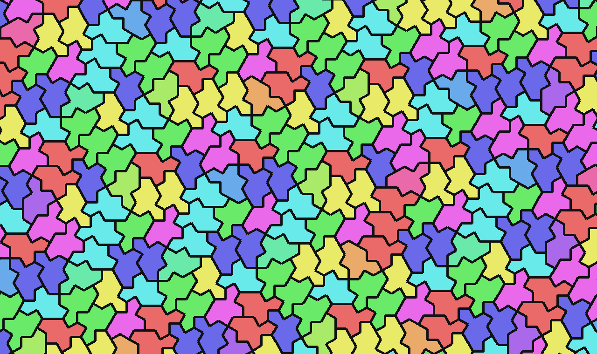
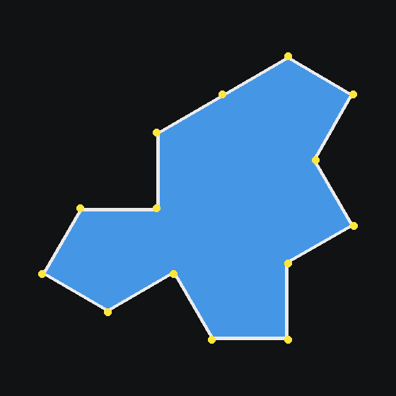
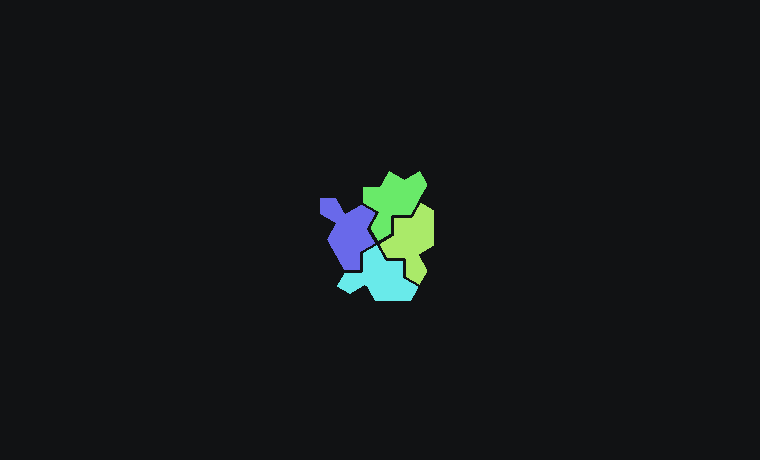

Almost every photomosaic ever made sits on a square grid. Neural-Mosaic can lay one out on the spectre — the chiral aperiodic monotile discovered in 2023 — a single shape that tiles the plane and never repeats.

The shape
In 2023 a four-person team — David Smith, Joseph Myers, Craig Kaplan and Chaim Goodman-Strauss — settled a problem open since the 1960s: is there a single tile that covers the plane only aperiodically, with no repeating unit? Their first answer, the "hat" (arXiv:2303.10798), was an "einstein" (German ein Stein, "one stone"), but it needed reflected copies. Weeks later the same team published the "spectre" (arXiv:2305.17743): a 14-sided tile that is strictly chiral — it tiles aperiodically using only rotations and translations of one handedness, no mirror images required. The true single-tile einstein.

Why put a mosaic on it
A square grid imposes a periodic rhythm. The eye locks onto the rows and columns, and at a distance the lattice itself becomes a texture competing with the picture. An aperiodic tiling has plenty of local structure but no global repeat, so the grid never resolves into a pattern of its own — it reads as organic. Add black grout and the geometry becomes legible: step in and every irregular cell turns out to be a separate photograph.
It is also, simply, a real mathematical object from a landmark result — not a filter. That is the difference between "a nice app" and "something that does what nothing else does."

How it renders
The geometry lives in
src/spectre_tiling.py.
generate_spectre_tiling(width, height, tile_size) produces an exact
chiral spectre tiling via the published substitution system:
- Deterministic — identical arguments give an identical tiling.
- Resolution-independent — it covers any rectangle; each spectre's area ≈
tile_size², so a spectre render has roughly the same tile count as a square render at the same setting (a fair comparison). - Strictly chiral — every placement shares one handedness; boundary tiles overhang and are clipped by the caller.
Each 14-gon then becomes a tile slot, filled by the same machinery as the square
engine: 5×5 LAB colour matching against the library, plus the anti-repetition penalty so no
single photo dominates. Rendering each non-rectangular cell efficiently is its own problem —
the masks are stored as polygons and rasterised lazily at composite time
(_LazyMask), supersampled 4× with LANCZOS for clean edges and pinned by bit-exact
golden tests. That work is written up in the
Performance Engineering
section.
See it / try it
- Live, zoomable: the interactive gallery hosts a full 16K spectre mosaic — zoom from the whole portrait down to one photo in a single irregular cell.
-
Render your own:
python -m src.cli render input/portrait.jpg --engine smart --shape spectre --res 16K
Tiling discovery: Smith, Myers, Kaplan & Goodman-Strauss, "A chiral aperiodic monotile" (2023), arXiv:2305.17743. Implementation and images: Neural-Mosaic.